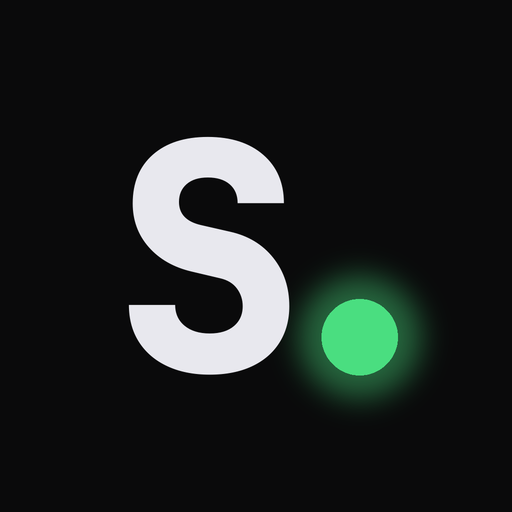

Given a launch idea, Signal judges whether the narrative is launch-ready, routes 2–3 comparable paths (each citing a named Bags token as proof), and flags if the draft is already a word-for-word clone of an existing on-chain launch. Every number Signal cites traces back to a concrete Bags launch in its local index — no LLM-hallucinated comps.
Signal cites 4 comparable tokens in the 0.40–0.51 similarity range and proposes 3 concrete launch routes, each grounded in a named Bags launch.
Signal names TURINGMIND as the closest comp but flags it as inactive and refuses to commit to a route. The right answer isn't always "launch" — sometimes it's "wait."
Signal surfaces two word-for-word identical existing launches and calls the draft out as a clone. Refuses to suggest a path — tells the user to reframe first.
/token-launch/feed + /solana/bags/pools) + Helius DAS → SQLite.sentence-transformers/all-MiniLM-L6-v2 on MPS, brute-force cosine.OpenAIModelClient.